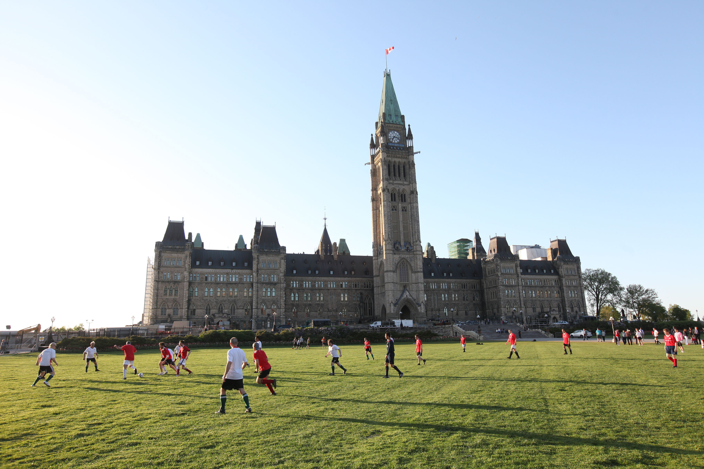
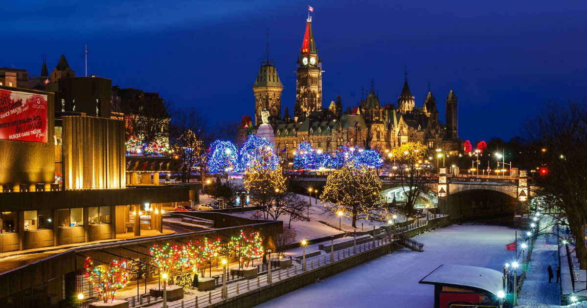

Parliament Hills
Parliament Hill is one of Canada’s most iconic sites and a must-see when visiting Canada’s capital. The historic, neo-Gothic Parliament Buildings stand tall on a hill overlooking the majestic Ottawa River in downtown Ottawa. And although the buildings are home to the country’s federal government (Prime Minister Justin Trudeau works there), visitors are welcome on-site for free tours and programming all year-long. Whether you visit Parliament Hill for a selfie, for a tour, or to experience one of the many free events, you’ll never run out of things to discover!
FREE TOURS
Visitors can take free guided tours of two sites that are temporarily housing Parliamentary Chambers. These tours are offered while Parliament’s Centre Block is closed to the public during the building’s decade-long rehabilitation:
-
House of Commons (West Block on Parliament Hill): From 2010 to 2018, traditional craftsmanship and cutting-edge technologies were used to create a greener, fully accessible and barrier-free West Block. One of the spectacular new spaces is the glass-roofed structure built into the courtyard. The new state-of-the-art, underground Visitor Welcome Centre (located between West Block and Centre Block) is the tour starting point, and also houses the Parliamentary Boutique.
-
Senate (Senate of Canada Building): This Beaux-Arts-style building has a storied past and beautiful architecture: Originally built as Ottawa’s train station in 1912 (the same year as the Fairmont Château Laurier which is located directly across the street), it later became the Government Conference Centre. It was rehabilitated to temporarily house the Senate in part due to its convenient location just one block from Parliament Hill.

RESERVATIONS SYSTEM
You can reserve tickets online for guided tours of the House of Commons and the Senate. The online booking system shows real-time availability and allows advanced reservations. Reservations are also available on a first-come-first-serve basis at the door of each location, dependent on ticket availability.

FREE YEAR-ROUND PROGRAMMING
The grounds of Parliament Hill are a welcoming and photogenic place, with large grassy spaces, dozens of monuments and the symbolic Centennial Flame. Plus, many special events are held year-round on the large front lawn, and they’re all free! Here are some highlights you can expect:-
Changing of the Guard: This free ceremony – modeled on the one in London, England – takes place each morning from late June to late August. Watch guards in scarlet uniforms and bearskin hats as they march with precision to the sound of the accompanying military band.
-
Northern Lights Sound and Light Show: Each evening from early July to early September, this multimedia presentation tells the story of Canada through beautiful images projected onto Parliament’s Centre Block and a bilingual (English and French) soundtrack. Christmas Lights Across Canada: From early December to early January, hundreds of thousands of dazzling holiday lights glow throughout downtown Ottawa, and a winter lightscapes multimedia show is projected onto Parliament Hill’s Centre Block.
-
Yoga on Parliament Hill:Join hundreds of yogis each Wednesday from 12:00 to 1:00 p.m. from May through August, and every Monday in August from 8:00 to 9:00 p.m. (Sunset Yoga).
-
Fortissimo: This spectacular presents massed military bands, pipes and drums, guest performers and the soldiers of the Ceremonial Guard over three days in July.
-
Canada Day: On July 1st each year, Ottawa hosts Canada’s biggest birthday party! Many streets in the downtown core are closed to traffic and celebrations usually include concerts and family entertainment on Parliament Hill and at other official sites, Snowbird fly pasts, and spectacular fireworks in the evening.